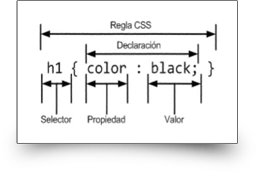

Hojas de Estilo en Cascada CSS y Frameworks CSS
Las páginas web necesitan ser visualmente atractivas y funcionales. Anteriormente internet se usaba solo para consultar documentación pero hoy en día las páginas web no son solo informativas sino que llegan a ser completas apps que reemplazan muchas veces a las apps de escritorio.
Para darle una apariencia adecuada y acomodar los elementos web de una manera correcta se usa la tecnología de Hojas de Estilo en Cascada (CSS).
CSS (siglas en inglés de Cascading Style Sheets), en español «Hojas de estilo en cascada», es un lenguaje de diseño gráfico para definir y crear la presentación de un documento estructurado escrito en un lenguaje de marcado.2 Es muy usado para establecer el diseño visual de los documentos web, e interfaces de usuario escritas en HTML o XHTML; el lenguaje puede ser aplicado a cualquier documento XML, incluyendo XHTML, SVG, XUL, RSS, etcétera. Junto con HTML y JavaScript, CSS es una tecnología usada por muchos sitios web para crear páginas visualmente atractivas, interfaces de usuario para aplicaciones web y GUIs para muchas aplicaciones móviles (como Firefox OS).
CSS está diseñado principalmente para marcar la separación del contenido del documento y la forma de presentación de este, características tales como las capas o layouts, los colores y las fuentes. Esta separación busca mejorar la accesibilidad del documento, proveer más flexibilidad y control en la especificación de características presentacionales, permitir que varios documentos HTML compartan un mismo estilo usando una sola hoja de estilos separada en un archivo .css, y reducir la complejidad y la repetición de código en la estructura del documento.
La separación del formato y el contenido hace posible presentar el mismo documento marcado en diferentes estilos para diferentes métodos de renderizado, como en pantalla, en impresión, en voz (mediante un navegador de voz o un lector de pantalla), y dispositivos táctiles basados en el sistema Braille. También se puede mostrar una página web de manera diferente dependiendo del tamaño de la pantalla o tipo de dispositivo. Los lectores pueden especificar una hoja de estilos diferente, como una hoja de estilos CSS guardado en su computadora, para sobreescribir la hoja de estilos del diseñador.
La especificación CSS describe un esquema prioritario para determinar qué reglas de estilo se aplican si más de una regla coincide para un elemento en particular. Estas reglas son aplicadas con un sistema llamado de cascada, de modo que las prioridades son calculadas y asignadas a las reglas, así que los resultados son predecibles.
La especificación CSS es mantenida por el World Wide Web Consortium (W3C). El MIME type text/css está registrado para su uso por CSS descrito en el RFC 2318.5 El W3C proporciona una herramienta de validación de CSS gratuita para los documentos CSS.
Sintaxis
CSS tiene una sintaxis simple y usa un conjunto de palabras clave en inglés para especificar los nombres de varias propiedades de estilo. Una hoja de estilos consiste en una serie de reglas. Cada regla, o conjunto de reglas consisten en uno o más selectores, y un bloque de declaración.
Selectores
Los selectores declaran qué etiquetas se le aplican a los estilos que coincidan con la etiqueta o atributo señalados en la regla.
Los selectores pueden aplicarse a:
- Todos los elementos de un tipo, como los párrafos
-
Elementos seguidos de un atributo, en particular:
- id: identificador, un identificador único para la etiqueta.
- class: clase, un identificador para anotar múltiples elementos.
Las clases y los identificadores son sensibles a las mayúsculas, comienzan con letras, y pueden incluir caracteres alfanuméricos y guiones bajos. Una clase se aplica a cualquier número de elementos. Un identificador se aplica a un solo elemento.
Bloque de declaraciones
Un bloque de declaraciones consiste en una lista de declaraciones unidas. Cada declaración consiste en una propiedad, dos puntos (:), y un valor. Si hay muchas declaraciones en un bloque, un punto y coma (;) es insertado para separar cada declaración.
Uso
Antes del desarrollo de CSS, toda la información presentacional de los documentos HTML era incluida en el código HTML. Los colores de las fuentes, los estilos de fondo, la alineación de los elementos, los bordes y tamaños eran descritos explícitamente, a veces de manera redundante, dentro del HTML. CSS permite a los diseñadores mover toda la información presentacional a otro archivo, la hoja de estilos, resultando en un código HTML notablemente más simple.
Por ejemplo, aplicando estilos mediante etiquetas presentacionales HTML, un elemento h1 definido con texto rojo se puede representar como:
<h1><span style="color:red;"> Capítulo 1. </span></h1>
Usando CSS, el mismo elemento puede escribirse usando propiedades de estilo inline en vez de atributos y etiquetas de presentación:
<h1 style="color: red;"> Capítulo 1. </h1>
Una hoja de estilos CSS externa, descrita abajo, puede enlazarse con un documento HTML usando la sintaxis siguiente:
<link href="hojadeestilos.css" rel="stylesheet" type="text/css" />
El código CSS se puede incluir en el código HTML en la etiqueta <style> dentro de la etiqueta <head> del documento:
<tstyle>
h1 {color: red}
</style>
Referencias
- Varios autores. Hoja de estilos en cascada. Wikipedia.com. https://es.wikipedia.org/wiki/Hoja_de_estilos_en_cascada. Consultado el 21/09/2021
- BALBOTÍN, Darío. Tutorial CSS3: El uso de reglas. Dariobf.com. https://www.dariobf.com/tutorial-css3-regla-cs/. Consultado el 21/09/2021